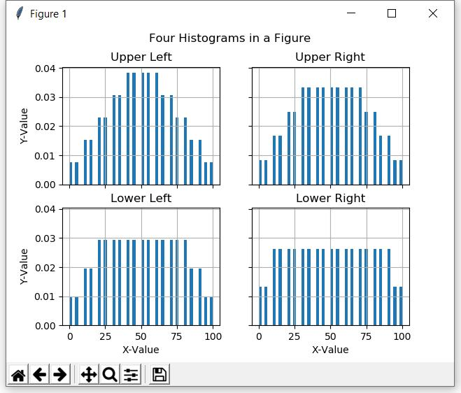

The Data Visualization section of this eBook provides and explains detailed information about plotting various types of data using the Matplotlib library. However, you will need to know something about plotting of statistical data before you reach that section of the eBook. The purpose of this lesson is to provide a preview of the code syntax that you can use to plot four histograms in a single figure.
No attempt is made to explain the code other than the comments. It is expected that you should be able to understand the code well enough from those comments to use it when you need it.
The Python code that I will show later causes the following image to appear on the screen.

Description of the image in Figure 1
Type of image: A composite figure containing four histogram plots arranged in a 2x2 grid within a window titled Figure 1.
Overall summary: The figure displays four separate histograms under the overall title "Four Histograms in a Figure." Each subplot has its own title indicating its position in the grid: Upper Left, Upper Right, Lower Left, and Lower Right. All histograms show frequency distributions using vertical bars, with X-Value on the horizontal axis and Y-Value on the vertical axis. The upper histograms appear more bell-shaped, while the lower histograms appear flatter or more uniform.
Detailed description:
Purpose of the image: To illustrate an example of plotting four histograms in a single figure, demonstrating how multiple statistical distributions can be displayed and compared using a 2x2 subplot layout.
The image shown above was produced with the following code.
import matplotlib.pyplot as plt
#Create a 2x2 figure containing four plots with
#shared x and y tick marks and labels.
fig,ax = plt.subplots(2,2,sharey=True,sharex=True)
#Create and plot histograms for four data sets.
#Create a dataset.
data01=list(range(0,100,5))+list(
range(10,90,5))+list(
range(20,80,5))+list(
range(30,70,5))+list(
range(40,60,5))
#Plot the dataset
ax[0,0].hist(
data01,#Data to plot
bins=50,#Number of bins in the histogram
density=True,#Normalize the histogram
range=(min(data01),#Lower limit of the histogram
max(data01)));#Upper limit of the histogram
#Apply some cosmetics to the plot
ax[0,0].grid(True)
ax[0,0].set_title('Upper Left')#Title above the histogram
ax[0,0].set_ylabel('Y-Value')#Label on y-axis of histogram
#Create and plot another dataset
data02=list(range(0,100,5))+list(
range(10,90,5))+list(
range(20,80,5))+list(
range(30,70,5))
ax[0,1].hist(data02,
bins=50,
density=True,
range=(min(data02),
max(data02)));
ax[0,1].grid(True)
ax[0,1].set_title('Upper Right')
#Create and plot another dataset
data03=list(range(0,100,5))+list(
range(10,90,5))+list(
range(20,80,5))
ax[1,0].hist(data03,
bins=50,
density=True,
range=(min(data03),
max(data03)));
ax[1,0].grid(True)
ax[1,0].set_title('Lower Left')
ax[1,0].set_xlabel('X-Value')
ax[1,0].set_ylabel('Y-Value')
#Create and plot another dataset
data04=list(range(0,100,5))+list(
range(10,90,5))
ax[1,1].hist(data04,
bins=50,
density=True,
range=(min(data04),
max(data04)));
ax[1,1].grid(True)
ax[1,1].set_title('Lower Right')
ax[1,1].set_xlabel('X-Value')
#Display a title at the top
plt.suptitle('Four Histograms in a Figure')
#Cause the plot to become visible
plt.tight_layout()
plt.show()
Author: Prof. Richard G. Baldwin
Affiliation: Professor of Computer
Information Technology at Austin Community College in Austin, TX.
File: Preview01.htm
Revised: 02/19/26
Copyright 2022 Richard G. Baldwin
-end-